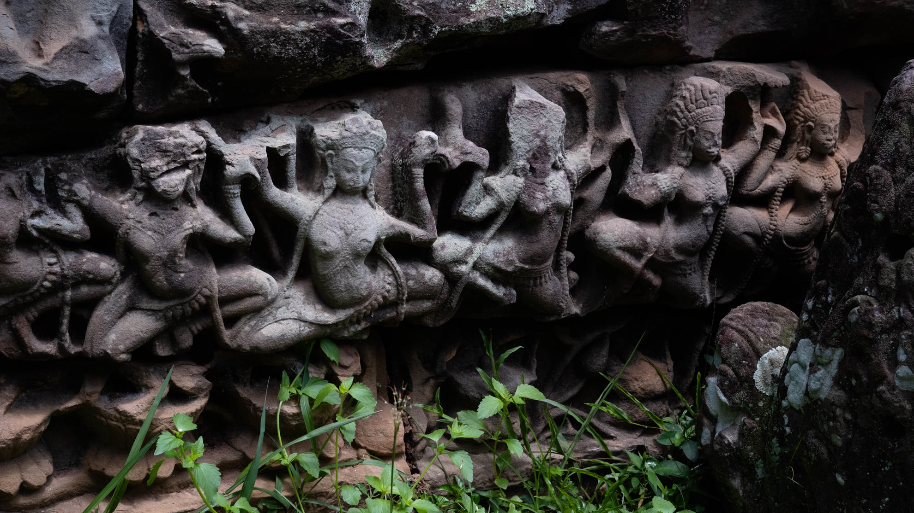
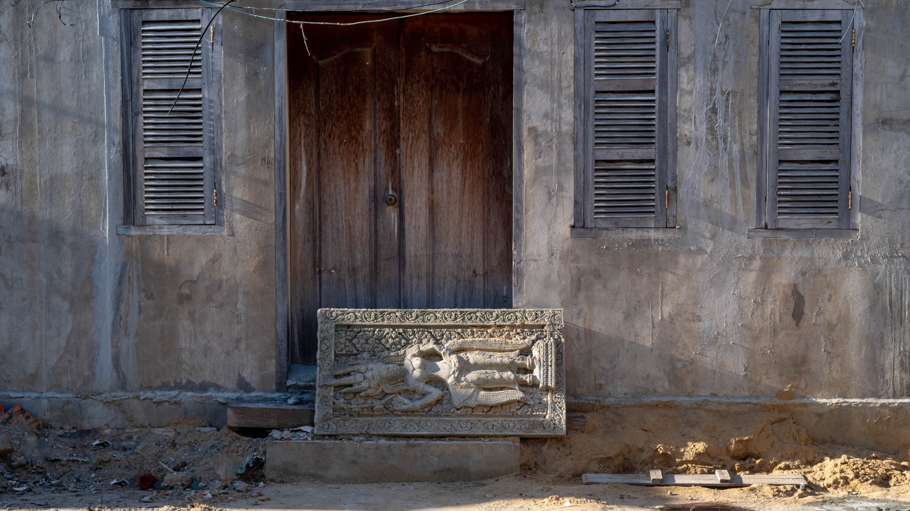

Itinerary Engine
Your destination, budget, travel style, and interests — shaped by whichever of our eight original travel archetypes speaks to you. The AI writes a full day-by-day itinerary in that voice.
Plan My TripYour destination, budget, travel style, and interests — shaped by whichever of our eight original travel archetypes speaks to you. The AI writes a full day-by-day itinerary in that voice.
Plan My TripFind Bib Gourmand picks and affordable Michelin-starred restaurants in any city, filtered by budget and district. Extraordinary dining without the extraordinary price.
Find Budget Michelin
CambodiaTemples built by Jayavarman VII tolerated the coexistence of Buddhism alongside Hinduism. Later, during the Hindu Reaction, Buddha sculptures were destroyed throughout the complex — yet traces remain.
Read More
CambodiaPhnom Penh rewards the walker. Step away from the riverfront and into the city's layered neighbourhoods to discover French colonial buildings, bustling markets, and quiet pagodas.
Read More Cambodia
Cambodia
A short ferry from Sihanoukville brings you to one of Southeast Asia's most beautiful islands — white sand beaches, clear water, and a pace of life that feels removed from the rest of the world.
Read More Cambodia
Cambodia
Tucked into a quiet street in Phnom Penh, the Chinese House is a beautifully restored heritage building that offers a window into the city's rich Sino-Khmer history and culture.
Read More Cambodia
Cambodia
The great walled city of Angkor Thom was the last and most enduring capital of the Khmer Empire. Its five monumental gates, each crowned with stone faces, still command awe after eight centuries.
Read More Cambodia
Cambodia
At the centre of Angkor Thom rises Bayon, a temple unlike any other — its towers carved with dozens of serene, smiling faces that seem to watch from every angle at every hour of the day.
Read MoreWe're building a platform for travelers who go somewhere, embrace it and appreciate different perspectives — not to get a selfie for an algorithm to gain followers and travel brag. If you've spent real time traveling and have enlightening moments, we'd like to hear from you.
Cultural depth, original photography, authentic experience. No listicles, no sponsored roundups — just travel writing worth reading.
Become a ContributorThe story behind the place, not just the logistics of getting there.
Your own images from your own trips — honest over polished.
A real point of view. Uncertainty is not a weakness in travel writing.
Welcome Back